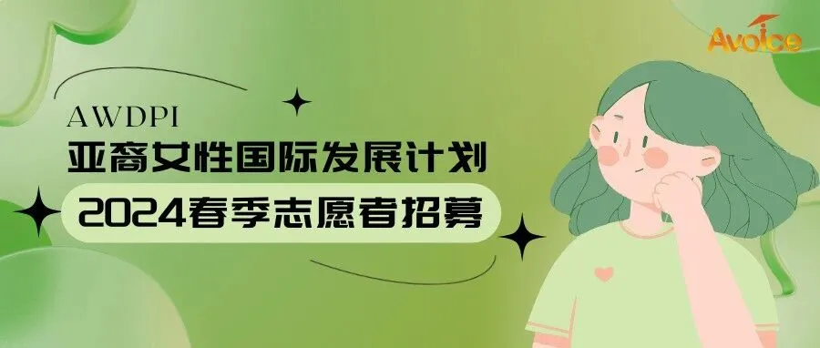
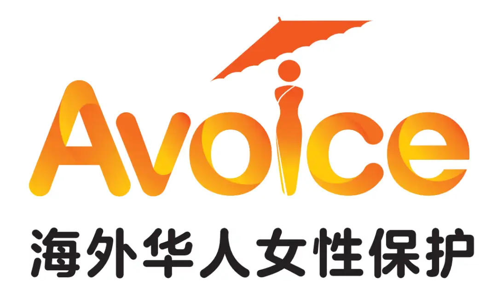
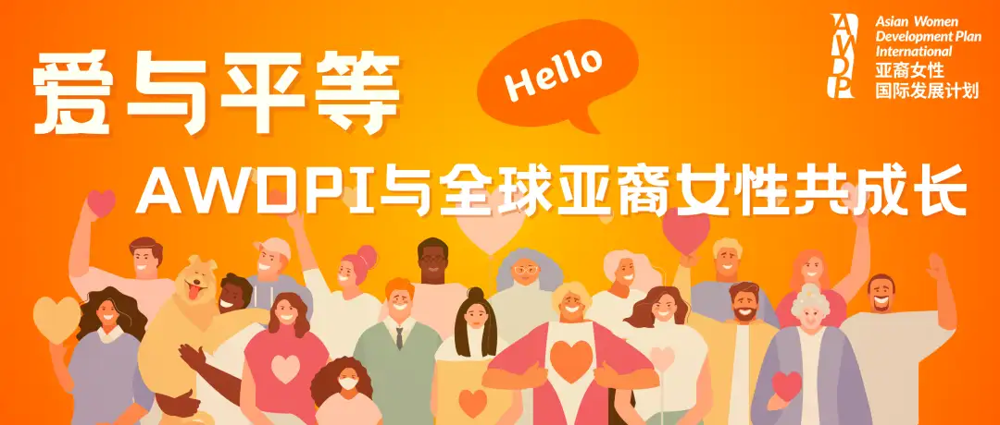
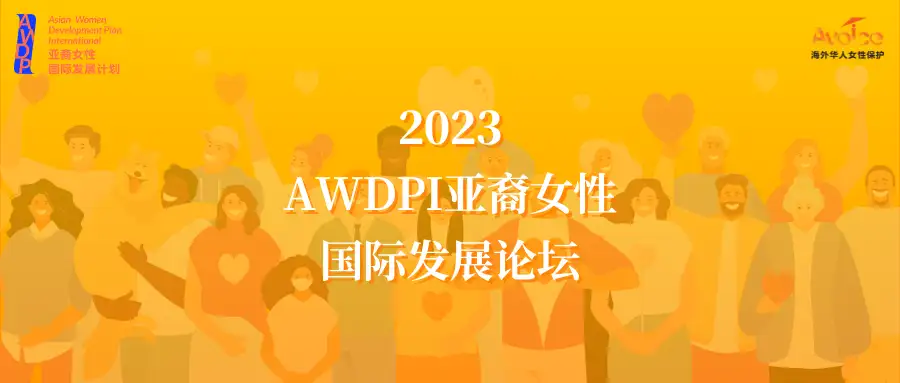
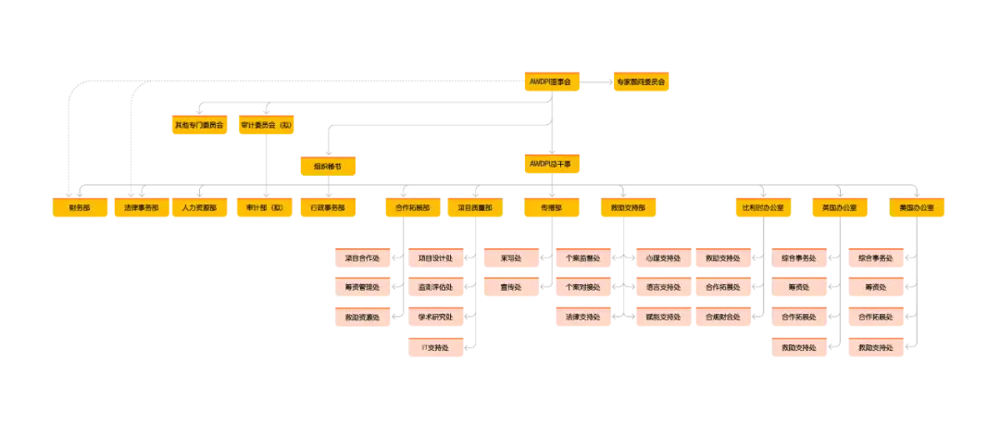

一
关于AWDPI
AWDPI亚裔女性国际发展计划（Asian Women Development Plan International） 是一家国际公益组织，致力于消除针对海外亚裔女性的歧视和性别暴力，并促进她们的赋能与发展。其由2020年成立的Avoice（海外华人女性保护项目，Against Violence to Overseas Chinese Women Program）发展而来。AWDPI在欧洲、北美和亚太的多个国家和地区开展工作，并在英国、比利时和美国设立国家办公室团队。AWDPI与各界建立了广泛的合作网络，包括联合国系统组织、各国政府相关部门、国际组织、跨国公司以及学术机构。AWDPI倡导对海外亚裔女性的生存困境的关注，并为她们提供持续的保护和支持。AWDPI希望令海外亚裔女性在社会、经济、文化、教育等方面获得更多发展机会，帮助她们从弱势群体成长为推动社会进步的重要力量。


我们的使命
消除针对亚裔女性的暴力与歧视，促进亚裔女性的保护与发展
我们的愿景
为女性创造爱与平等的世界
我们的价值观
参与、包容、赋能
我们致力于
为家暴幸存者提供救助支持。通过完善的救助体系和强大的海外救助网络，及时响应海外华人女性在家暴预防、紧急救助和后续服务等方面的需求。
建立社群联结。 通过组建线上社群矩阵和线下互助小组，为海外亚裔女性搭建交流、学习和互助的国际化平台，形成同伴支持网络，实现自我发展。
提升女性影响力。通过论坛、研讨会、工作坊等活动，积极促成多方联动，以分析经验、研究挑战、探讨对策，展现亚裔女性的力量与潜能。
发起宣传与倡导。积极开展公众宣传、学术研究和政策倡导，促进各国对海外亚裔女性的关注，并推动改善相关政策和发展环境。
欢迎通过以下链接了解更多关于
AWDPI亚裔女性国际发展计划的信息：
AWDPI亚裔女性国际发展计划介绍链接

Avoice海外华人女性保护项目和亚裔女性国际发展论坛为AWDPI的品牌项目
Avoice海外华人女性保护项目
Avoice影响力报告推文链接

亚裔女性国际发展论坛回顾
亚裔女性国际发展论坛回顾推文链接

秉心克慎，奉植惟勤，积一时之跬步，臻千里之遥程。
在促进亚裔女性自由成长与发展的道路上，AWDPI初衷不渝，不断在学习中成长，在奉献中提升。我们也真诚期待与任何个人、企业、机构携手同行，愿聚众人之力，启明日之新。如果你对消除性别暴力、推动性别平等抱有热情；如果你期待在拥有国际化视野的公益项目中获得实践机会和成长，那么，欢迎你加入AWDPI亚裔女性国际发展计划，结识分布于多个国家的优秀志愿者和行业内的资深专家导师，用青年力量，共建爱与平等的华人女性家园；向时代展现青年独有的力量，向全球唱响社会责任之声。
AWDPI亚裔女性国际发展计划整体组织架构

二
招募信息
AWDPI本次共有11个部门，92个岗位参与春招，其中大多数岗位欢迎大家以线上的形式进行，少数岗位欢迎大家以线下的形式进行。
关于本次春招的具体岗位介绍可扫描下方二维码或在文末处点击“阅读原文”搜索岗位名称/部门名称来查询岗位的详细信息/部门所有岗位的详细信息。
岗位信息查询

报名表单
温馨提示：本次招募每位伙伴最多可选择三个不同的岗位进行投递，提交时选择的意向岗位顺序即志愿顺序，hr将按照志愿顺序推进招募流程。岗位名额有限，感兴趣的小伙伴请尽快投递~有关招募的问题请咨询[email protected]
部门岗位清单
01 财务部
部门介绍：
财务部为AWDPI重要的后台部门，主要负责组织的预算设计，筹资管理与报表披露；加入AWDPI财务部，你将有机会加入跨国NGO组织财务制度建设过程，并以财务视角助力组织战略的成功。
岗位清单：
财务部-国家办公室财务对接
财务部-海外财务专家顾问
02 审计部
部门介绍：
审计部负责对AWDPI总部以及各国家办公室（地区分部）的常规和年度季度专项审计工作，并负责维系组织内部控制和内部审计制度的健全性和有效性。
岗位清单：
审计部-内控内审
审计部-负责人
03 法律事务部
部门介绍：
法律事务部负责组织总部以及各国家办公室（地区分部）的组织管治，参与制定组织各项制度并监督其实施，管控组织以及各项业务法律风险，并提供包括合同起草审查、法律研究等在内的日常法律服务支持。此外，法律事务部还将协调外部法律顾问开展工作。
岗位清单：
In-House Counsel
04 传播部
部门介绍：
传播部负责传递亚裔女性生存和发展困境的声音，通过温暖的品牌设计表达女性力量，通过社交媒体矩阵与网站联动为受助女性提供发声支持，也让女性保护领域的专家专访、学术研究报告、心理与救助科普、性别视角观点得到更多的关注。
岗位清单：
传播部负责人
宣传处负责人
AIGC内容运营
公众号编辑
短视频剪辑
视觉设计师
小红书运营
Instagram运营
LinkedIn运营
Youtube运营
采写处成员
05 合作发展部
部门介绍：
合作发展部负责组织拓展海内外合作资源，搭建合作关系网络及海外救助网络，为救助、筹资、传播等方面的工作提供合作资源支持，并依托合作关系的建立开展各类合作项目。
岗位清单：
合作发展专员
项目合作专员
合拓策划顾问/专员
海外筹资专员
06 救助支持部
部门介绍：
救助支持部是机构的重要执行部门之一，它负责海外救助支持工作的具体执行。救助支持部下设个案对接处、个案监督处、法律支持处、心理支持处、语言支持处和赋能支持处，并领导、统筹、监督各国家办公室（地区分部）的线下救助支持工作。
岗位清单：
救助支持部负责人
个案监督处负责人
个案监督人员
个案对接人员
心理支持处-学术组成员
心理支持处-外联组成员
心理支持处-心理服务组成员
赋能支持处-社群运营人员
语言支持处-德语组成员
语言支持处-葡语组成员
语言支持处-俄语组成员
语言支持处-荷兰语组成员
语言支持处-西班牙语组成员
语言支持处-捷克语组成员
语言支持处-法语组成员
语言支持处-意大利语组成员
语言支持处-英语组成员
语言支持处-编译组成员
中文编辑
07 人力资源部
部门介绍：
建立、建全机构内部的人力资源管理体系，通过科学的人才规划、绩效管理、评估考核，建设和培训优秀的志愿者团队。
岗位清单：
招募专员
培训负责人
培训专员
员工关系专员
绩效考核专员
08 项目质量部
部门介绍：
项目质量部下属学术研究处、项目设计处、监测评估处、IT信息处4个子部门。其中，学术研究处负责策划并实施与性别平等、反家暴、女性保护与赋能等相关主题的的学术研究，撰写研究报告及科普文章，为机构战略和项目设计提供建议与调整方向。项目设计处负责设计制定机构发展战略及规划、年度工作计划，并牵头策划、执行大型活动。监测评估处负责监测机构和项目的日常工作进度与质量，组织开展整体效果和影响的评估，并根据监测评估结果，提出改进方案，优化工作流程，提升工作效率，促进各部门的协同配合。IT信息处负责网站的设计、开发、测试以及维护，组织内部与各部门合作的日常IT支持工作等。
岗位清单：
IT信息处-IT支持人员
IT信息处-前端开发顾问
国际问题研究顾问（全职/兼职、可线上办公、薪资面议）
09 英国国家办公室
部门介绍：
英国国家办公室是AWDPI亚裔女性国际发展计划在英国的分支机构，为英国华人女性提供反家暴救助及赋能支持。
岗位清单：
英国-执行助理
英国-合作拓展处PMO
英国-合作拓展处成员
英国-募资处成员
英国-对接小助手
英国-线下救助团队负责人
英国-救助支持处-救助团队一对一个案救助成员
英国-线下救助语言支持成员
英国-线下救助法律支持负责人
英国-线下救助法律支持成员
英国-线下救助心理支持负责人
英国-线下救助心理支持成员
英国-线下救助赋能支持负责人
英国-线下救助赋能支持成员
In-House Counsel (UK local)
10 美国国家办公室
部门介绍：
美国国家办公室是AWDPI亚裔女性国际发展计划在美国的分支机构，为美国华人女性提供反家暴救助及赋能支持。
岗位清单：
美国国家办公室联合负责人
美国纽约/波士顿/芝加哥合作拓展处成员
美国-财务管理负责人
美国-财务管理专员
美国筹资处负责人
美国筹资处成员
美国救助支持处负责人
美国个案对接专员
美国法律支持负责人
美国法律支持专员
美国心理支持负责人
美国心理支持专员
美国语言支持负责人
美国语言支持专员
美国综合事务处负责人
美国HR负责人
美国HR成员
美国行政负责人
美国行政成员
In-House Counsel (US local)
11 比利时国家办公室
部门介绍：
比利时国家办公室是AWDPI亚裔女性国际发展计划在比利时的分支机构，为比利时华人女性提供反家暴救助及赋能支持。
岗位清单：
比利时国家办公室负责人
比利时个案对接人员
比利时法律支持人员
比利时心理支持人员
比利时语言支持人员（法语）
比利时语言支持人员（荷兰语）
比利时赋能支持人员
比利时合作拓展人员
比利时法律合规人员
比利时财务会计人员
以上就是AWDPI本次春招的全部岗位清单，如果你对其中任一部门和岗位感兴趣，请扫描岗位信息查询二维码，搜索部门名称查看该部门所有岗位信息，或搜索任一具体岗位名称查看岗位信息。
下附岗位信息查询与报名二维码，欢迎大家查询和投递！
岗位信息查询

报名表单
三
招募流程
01
提交简历
02
简历初选
03
笔试（如有）
04
面试
05
录取通知
06
入职培训
工作表现达标的志愿者，将会获得
志愿者证书（工作满6个月及以上）/实习证明（工作满1年及以上）
参与评选月度和年度优秀志愿者
参加内外部的能力建设和交流活动
参加志愿者团建活动
使用志愿者积分兑换项目周边产品及学习资料和工具
担任项目管理职位，加入国际青年志愿者网络校友会
得到项目专家顾问的指导和推荐信
项目合作伙伴的实习、活动内推
参与性别平等、女性保护与发展、青年赋能等相关领域的课题研究
与国内外公益机构、学术机构、基金会的合作交流机会
与来自世界各地、志同道合的伙伴一起学习成长
纤纤不绝林薄成，涓涓不止江河生。
在AWDPI发展的道路上，盼有您相伴！
内容来源｜AWDPI Team
排版、封面｜游舸